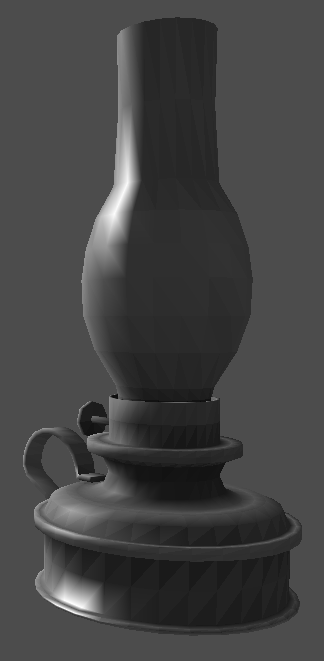
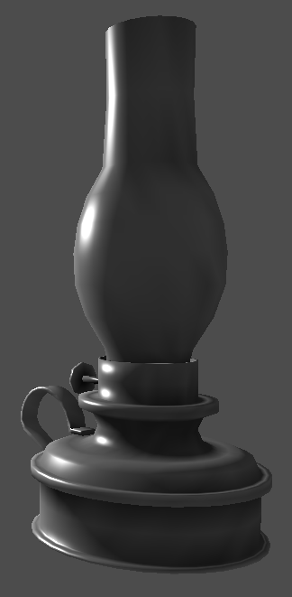

(May 2005)
This is the OpenGL version of my 3D renderer.
In essence, it is a straightforward implementation of the core principles of "polygon related" graphics theory. The source code includes:
- Loading of 3D models (.ply files as generated by shadevis).
- Point rendering
- Wire-frame rendering
- Gouraud-shaded rendering with ambient occlusion color per triangle
- Per-pixel Phong shading with per-pixel interpolated ambient occlusion
- Portable display and keyboard handling through libSDL.
Unlike the corresponding pure-software implementation, these sources use OpenGL to do the rendering. In fact, they use fragment shaders and Vertex Buffer Objects (VBO) to perform all the graphics calculations in hardware (if supported by your card). A 70$ graphics card (an ATI 4670) provides around 100 million phong shaded triangles per second with this renderer.
Download, compile and run
The Source code is available under the GPL. Win32 binaries are also available (compiled with MinGW).Compilation follows the well known procedure...
bash$ ./configure bash$ makeAfter a successful make, you can then watch the packaged 3D objects:
bash$ cd 3D-objects bash$ ../src/renderer/renderer statue.plyTo navigate...
- R toggles autospin.
- Fly around with the cursor keys,A,Z and rotate the light with W.
- SPACE changes the rendering mode (points - lines - gouraud - phong).
- S,F,E and D are 'strafe' left/right/up/down.
- ESC quits.
Creating more 3D objects on your own
- Use MeshLab to convert your 3D object to .PLY.
- Load it up in shadevis and hit ENTER to have shadevis calculate the ambient occlusion factors per vertex. After that, hit 'D' as many times as necessary to lower the diffuse light to 0%, and hit 'a' to pump up the ambient to 100%. Hit 'S' to save the object.
- Load the saved '..._vis.ply' with my renderer.
Phong shading
Notice that the Phong shading mode is real phong shading, done through the vertex and fragment shaders. The vertexes' normal vectors are interpolated per-pixel, and the complete lighting equation is then evaluated. To improve the areas not touched by the light source (the ambient ones), the shaders also interpolate the per-vertex ambient occlusion factor that shadevis generates, thus creating radiosity-look-alike renderings.Since my renderer uses shaders and vertex buffer objects, rendering speed is amazing: my Radeon 4670 draws a huge object I have (1.6 million triangles) at 86 frames per second, for an unbelievable 134 million phong-shaded triangles per second!
And just look at the difference between gouraud and phong shading...
|  |  |
Phong shading creates much better pictures than Gouraud; especially
at low tessellations.
Notice how the fragment shader creates Phong higlights,
and also how it
interpolates the vertex ambient occlusion factor per-pixel.


| Back to index My CV About me | Last update on: Sat Feb 27 01:41:47 2016 (Valid HTML) |
The comments on this website require the use of JavaScript. Perhaps your browser isn't JavaScript capable or the script is not being run for another reason. If you're interested in reading the comments or leaving a comment behind please try again with a different browser or from a different connection.